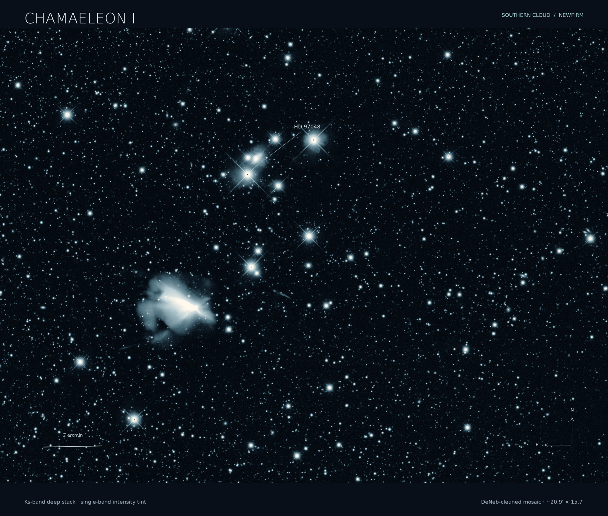
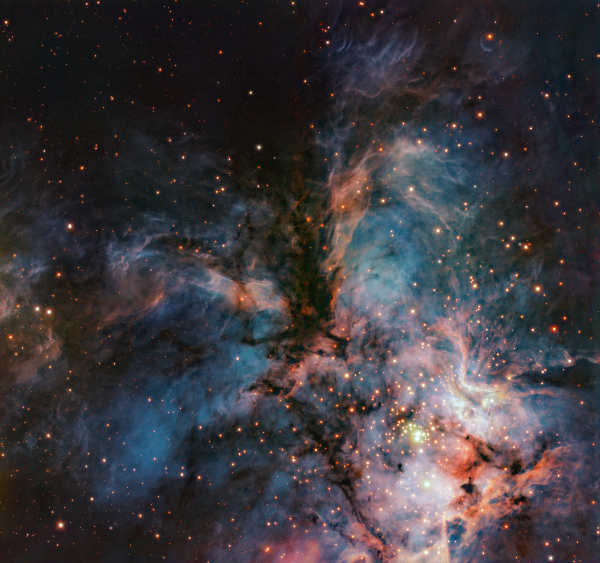
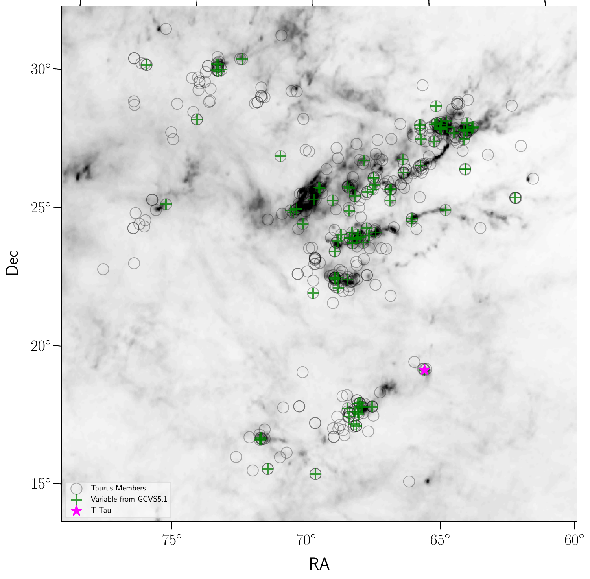

Nearby star formation
Cha-I DANCe
A long-baseline, multiwavelength census of Chamaeleon I, with spectroscopy as the next step.
ExploreRESEARCH
Exploring how environment shapes the products of star formation, and how far down in mass that process reaches.

Nearby star formation
A long-baseline, multiwavelength census of Chamaeleon I, with spectroscopy as the next step.
Explore

Master’s research
My master’s thesis explores the long-term optical and mid-infrared variability of young stars and brown dwarfs in Taurus, connecting their changing brightness and colours with disks, accretion and stellar activity.
ExploreDATA PRODUCTS
Explore the data products accompanying my research, including the full Taurus variability atlas.
Browse catalogs and downloads